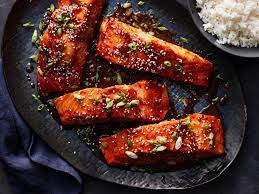

Bourbon Salmon

Why Bourbon Salmon is going to make a great addition to your kitchen!
Bourbon-Salmon is a healthy yet tasty dish that can be prepared for families of all sizes.
The salmon is lean, the ingredients add a sparkling sweetness, and that bourbon adds a zangy kick.
Each component of the dish comes together beautifully to create an unforgettable evening.
Ingredients
- 4 tablespoons butter
- 1/2 cup dark brown sugar
- 4(6 ounce) salmon steaks
- 1/3 cup bourbon whiskey
Steps
- Melt butter in a large heavy skillet over medium heat
- Stir in brown sugar
- Place salmon fillets on top of brown sugar mixture
- Cook for 5 minutes on medium heat. Turn salmon, and pour bourbon around the fillets
- Continue cooking for 5 minutes, or until fish flakes easily with a fork
- Spoon glaze over the salmon, and serve